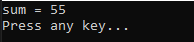
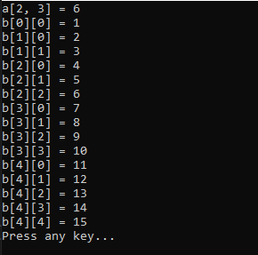
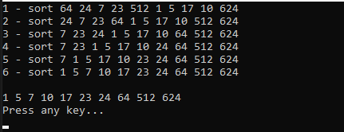
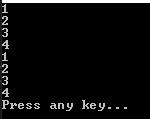
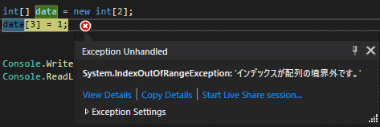

こんにちは。明月です。
この投稿はC#の配列とリスト(List)に関する説明です。
配列とは同じデータタイプのデータを連続的に格納するデータタイプです。(参考に連続的に格納することは論理的です。C++と比べてC#はStackメモリ割り当てがないので、物理的には連続ではありません。)
データタイプ[] 変数名 = new データタイプ[配列サイズ];
using System;
namespace Example
{
class Program
{
// 実行関数
static void Main(string[] args)
{
// intタイプの配列を10個宣言
int[] a = new int[10];
// 配列のインデクスは0から始まる。
a[0] = 1;
// 各配列に値を格納する。각 배열에 값을 설정한다.
a[1] = 2;
a[2] = 3;
a[3] = 4;
a[4] = 5;
a[5] = 6;
a[6] = 7;
a[7] = 8;
a[8] = 9;
a[9] = 10;
// 合計変数
int sum = 0;
// 繰り返し文で0から9までの配列の値を合計変数にデータ格納する。
for (int i = 0; i < 10; i++)
{
// 合計変数に配列の値を足す。
sum += a[i];
}
// コンソールに出力
Console.WriteLine("sum = {0}", sum);
// 任意のキーを押してください
Console.WriteLine("Press any key...");
Console.ReadLine();
}
}
}

上の例では配列を10個宣言しました。つまり、intタイプの変数が10個あることです。
配列のインデクスは0から始まります。
結果は変数名一つで10個のデータが格納しました。
上の例みたいな配列を一次配列といいます。つまり、一列にデータがあると想像できますね。
そうなら、多次配列もあります。
データタイプ[ , ] = new データタイプ[ , ];
データタイプ[ , ,] = new データタイプ[ , , ];
データタイプ[][] = new データタイプ[][];
using System;
namespace Example
{
class Program
{
// 実行関数
static void Main(string[] args)
{
// 多次配列宣言。5次の5個、つまり配列の個数は25個
int[,] a = new int[5, 5];
// 多次配列は多重繰り返しを利用してデータを格納する。
for (int i = 0; i < 5; i++)
{
for (int j = 0; j < 5; j++)
{
// 多次配列に配列のインデクスの掛ける値を格納する。
a[i, j] = i * j;
}
}
// コンソールに出力。 2 * 3 = 6
Console.WriteLine("a[2, 3] = " + a[2, 3]);
// 多次配列宣言
int[][] b = new int[5][];
// 1次配列たびに宣言する配列数を別に設定できる。
// a[0]は1個、a[1]は2個、a[2]は3個、a[3]は4個、a[4]は5個
for (int i = 0; i < 5; i++)
{
// 配列宣言
b[i] = new int[i + 1];
}
// 値をためのバッファー
int index = 0;
// 各配列に値を格納する。
for (int i = 0; i < b.Length; i++)
{
for (int j = 0; j < b[i].Length; j++)
{
// 格納するたびにバッファー値を増加
b[i][j] = ++index;
}
}
// 配列探索
for (int i = 0; i < b.Length; i++)
{
for (int j = 0; j < b[i].Length; j++)
{
// コンソールに出力
Console.WriteLine("b[" + i + "][" + j + "] = " + b[i][j]);
}
}
// 任意のキーを押してください
Console.WriteLine("Press any key...");
Console.ReadLine();
}
}
}

配列は単純に変数名を一つで何個のデータを格納することの目的ではないです。データが論理的に連続であることを考え、整列などで使うことができます。
整列のは無作為にあるデータを昇順、降順に順番を片付けることです。
using System;
namespace Example
{
class Program
{
// 実行関数
static void Main(string[] args)
{
// 整列を実行する配列を生成する。
// 目標はこの配列をバブル整列を通って昇順に整列しよう。
int[] sort = new int[10] { 512, 64, 24, 7, 23, 624, 1, 5, 17, 10 };
// 整列回数
int count = 0;
// 配列の整列がなければ終了フラグ
bool check = true;
// 整列が完了するまで無限繰り返し。
while (true)
{
// 配列の個数ほど繰り返し。(最後の配列の整列が必要ない。)
for (int i = 0; i < sort.Length - 1; i++)
{
// 配列比較
// 例えば、sort[0] = 512とsort[1] = 64を比較する時、
// sort[0]の値が大きいので、sort[0] = 64、 sort[1] = 512に配列値を交換。
if (sort[i] > sort[i + 1])
{
int swap = sort[i];
sort[i] = sort[i + 1];
sort[i + 1] = swap;
// データ交換があれば、再整列する。
check = false;
}
}
// データ交換がなければ、整列完了の状況。
if (check)
{
// ループ終了
break;
}
else
{
// データ交換がある。
count++;
// フラグ初期化
check = true;
// 配列状態を出力
// コンソールに出力
Console.Write(count + " - sort ");
// 配列出力
foreach (int s in sort)
{
// コンソールに出力
Console.Write(s + " ");
}
// 改行出力
Console.WriteLine();
}
}
// 改行出力
Console.WriteLine();
// 配列出力
foreach (int s in sort)
{
// コンソールに出力
Console.Write(s + " ");
}
// 改行出力
Console.WriteLine();
// 任意のキーを押してください
Console.WriteLine("Press any key...");
Console.ReadLine();
}
}
}

初期に配列変数に整列しようと思うデータを格納しました。配列状況を確認するため、無作為なデータを格納しました。
ここで配列0番目と次の位置のデータを比較して大きいデータが高次数に移動するように計算します。0番目の比較が完了すると1番目と次の位置のデータを比較します。
この繰り返しで最高の位置の前のデータまで比較します。(最高の位置のデータは比較する対象がありません。)
この方法で整列することをバブル整列といいます。
次はデバッグ表です。
| 入力値 | |||||||||
| 512 | 64 | 24 | 7 | 23 | 623 | 1 | 5 | 17 | 10 |
| 1次整列 | |||||||||
| 64 | 24 | 7 | 23 | 512 | 1 | 5 | 17 | 10 | 623 |
| 2次整列 | |||||||||
| 24 | 7 | 23 | 64 | 1 | 5 | 17 | 10 | 512 | 623 |
| 3次整列 | |||||||||
| 7 | 23 | 24 | 1 | 5 | 17 | 10 | 64 | 512 | 623 |
| 4次整列 | |||||||||
| 7 | 23 | 1 | 5 | 17 | 10 | 24 | 64 | 512 | 623 |
| 5次整列 | |||||||||
| 7 | 1 | 5 | 17 | 10 | 23 | 24 | 64 | 512 | 623 |
| 6次整列 | |||||||||
| 1 | 5 | 7 | 10 | 17 | 23 | 24 | 64 | 512 | 623 |
上のデバッグ表で1次整列で512の値がsort[4]まで移動します。なぜなら、sort[5]が623なので、sort[5]より小さいからです。sort[5]は623ですが、623より大きいデータがないので、最後配列に移動します。
2次整列には64がsort[3]まで移動しますね。sort[4]が512からです。sort[4]の場合は623より小さいから最後配列の前に移動します。
この流れで整列が行います。
配列を使う場合には宣言する時に配列の個数を決めて宣言します。
でも、仕様により入力するデータが個数が決めていることではなく、何個を格納するかを最初に知らない場合があります。
その時には個数を決めないリストを使います。
List<データタイプ> 変数名 = new List<データタイプ>();
using System;
using System.Collections.Generic;
namespace Example
{
class Program
{
// 実行関数
static void Main(string[] args)
{
// リスト宣言
List<int> list = new List<int>();
// データ入力
list.Add(1);
list.Add(2);
list.Add(3);
list.Add(4);
// listの個数ほど繰り返し
for(int i = 0; i < list.Count; i++)
{
// リストに入力順番でコンソールに出力
Console.WriteLine(list[i]);
}
// listのデータを繰り返しながらデータを受け取る。
foreach(var item in list)
{
// リストに入力順番でコンソールに出力
Console.WriteLine(item);
}
// 任意のキーを押してください
Console.WriteLine("Press any key...");
Console.ReadLine();
}
}
}

リストは宣言する時に個数が決まってないです。
つまり、ユーザが入力するほど、続けて入力ができます。配列の場合はインデクスを超えるとエラーが発生します。

これだけ見るとリストがすごく楽ですね。実際も配列よりリストをよく使います。
でも、リストも短所があります。リスト内部にはリスト連結リストアルゴリズムで作成していますが、入力はすごく早いですが、探索が遅いです。
つまり、大量なデータを扱うことになるとリストより配列が探索速度が速いです。でも、これは理論の話で、実際はそれを無視するほどハードウェアの性能が良くなったので普通は9割以上、リストを使います。でも、超大量の状況で探索性能を考えると思えば配列を考えてみる場合もあります。
ここまでC#の配列とリスト(List)に関する説明でした。
ご不明なところや間違いところがあればコメントしてください。
- [C#] 15. インタフェース(interface)2019/07/10 00:06:17
- [C#] 14. 抽象クラス(abstract)と抽象メソッド(abstract)、そして仮想関数(virtual)2019/07/08 23:04:09
- [C#] 13. クラスの継承と再定義(override)する方法、overrideとnewの差異2019/07/08 22:55:00
- [C#] 12. Staticとアクセス修飾子、そしてカプセル化2019/07/07 23:12:30
- [C#] 11. インスタンスう生成(new)とメモリ割り当て(StackメモリとHeapメモリ)そしてヌル(null)2019/07/07 22:54:13
- [C#] 10. クラスを作成する方法(コンストラクタ、デストラクタ)2019/07/06 00:53:17
- [C#] 9. 関数(Method)とオーバーロード、再帰呼び出し2019/07/06 00:38:29
- [C#] 8. 配列とリスト2019/07/05 00:12:42
- [C#] 7. 制御文2019/07/05 00:05:30
- [C#] 6. 演算子2019/07/04 00:09:43
- [C#] 5. データタイプ変換(キャスト:Cast)とコメント(Comment)2019/07/04 00:01:12
- [C#] 4. データタイプとリテラル(literal)、 Nullable2019/07/02 23:58:43
- [C#] 3. プログラミングの始めと変数と定数を使う方法2019/07/02 23:46:49
- [C#] 2. Visual Studioをインストールする方法2019/07/01 23:58:20
- [C#] 1. C#とは？2019/07/01 23:32:22
- [C#] 47. Nugetを使い方(外部ライブラリ)とデータベース(MariaDB(Mysql))を使い方、そしてトランザクション(Transaction)2021/10/08 18:58:57
- [Window] MariaDBをインストールする方法2021/10/08 18:56:05
- [C#] 46. データベース(MSSQL)に接続する方法2021/10/07 18:39:58
- [C#] 45. ネットワークソケット通信(Socket)を使い方2021/10/06 19:06:25
- [C#] 44. ファイル(FileInfo)とディレクトリ(DirectoryInfo)を扱い2021/10/05 19:29:34
- [C#] 43. ストリーム(Stream)とバイナリ(byte[])、エンコード(Encoding)、そしてusingを使い方とIDisposableインターフェース2021/10/04 18:33:04
- [C#] 42. ファイルを扱い(IO)とファイルメタデータ(FileInfo)を使い方2021/10/01 20:10:21
- [C#] 41. Taskクラスとasync、awaitを使い方2021/10/01 18:59:14
- [Javascript ] WebのFull calendar(スケジュールカレンダー)の使い方法2021/07/15 21:35:36
- [Java] 56. Web serviceのサーブレット(Servlet)で初期化作業(properties設定)2021/07/02 17:10:36
- [Java] 55. Spring frameworkに文字化けを解決する方法(Encoding設定)2021/06/30 16:37:16
- [Java] 54. Spring frameworkでWeb filterを使う方法2021/06/29 18:25:12
- [Java] 53. ウェブサービス(Web service)でエラーページを処理する方法2021/06/25 13:35:54
- [Design pattern] 1-3. ファクトリメソッドパターン(Factory method pattern)2021/06/23 19:45:37
- [Java] WebSocketでチャット履歴をローディングする方法2021/06/15 18:34:45